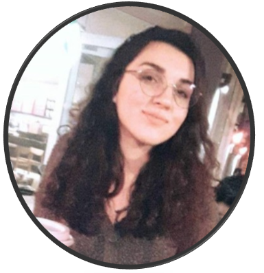
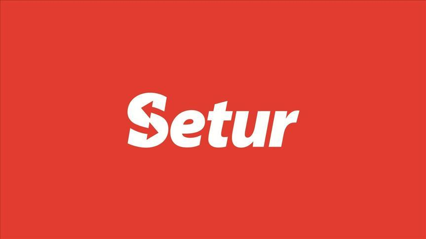

Tuğçe Özgirgin

Summary:
My name is Tuğçe Özgirgin. I was born on June 29, 2000 in Aydın, Turkey. I am a senior CS Student in Özyeğin University. I am learning Web-Development currently.
Education:
| Date |
Instution |
GPA |
| 2015-2019 |
Nazilli Science High School |
98.50 |
| 2020-2024 |
Özyeğin University |
3.25 |
Work Experience:
- Setur Software Development Intern (2023-):
- Making the developments on the agenda for setur.com.tr

Skills:
- Comfortable with SQL, C#,C,C++, Java, and Python and Kotlin languages
- Experienced with Android Application Development
- Experienced in software development processes (including agile, kanban)
- Knowledge of Object-oriented programming
- Decent level of skills on DB technologies (Oracle, MySQL, etc.)
Awards and Certifications:
- Womentum- Sustainability, gender rights and energy sector training participation certificate
Others: